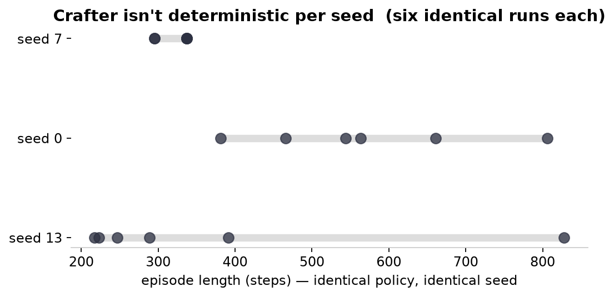
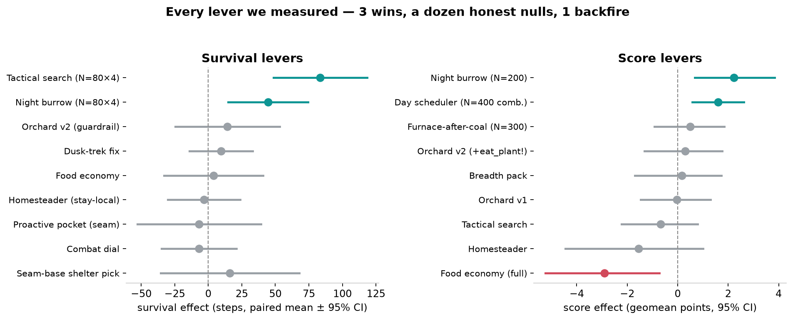
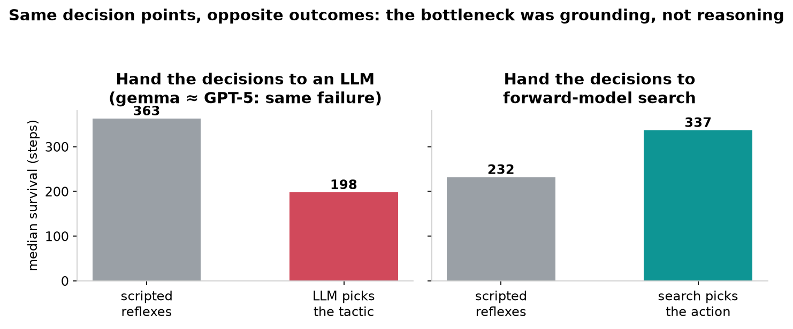
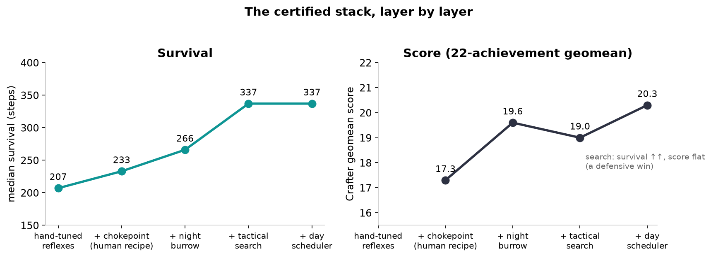
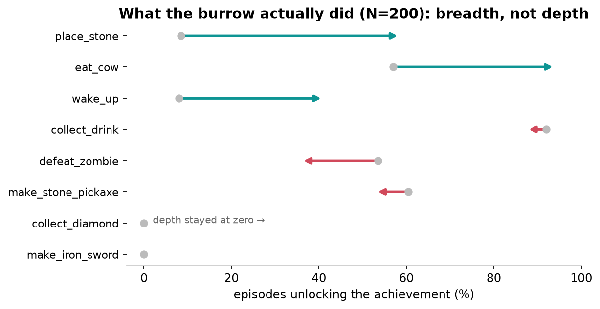

I Spent a Week Teaching an AI to Survive a Video Game. It Taught Me What Real Evidence Looks Like.
A MacBook, a survival game, a stack of honest failures, and the three ideas that actually worked.
This started as a simple question: how good an agent can you build for a little survival game using zero GPUs, zero training runs, and one laptop — just careful engineering, an AI research partner, and the willingness to be wrong in public (well, in my terminal)?
The game is Crafter, a 2D Minecraft-like benchmark the RL community uses: chop trees, craft tools, mine iron, dodge zombies, don’t starve, and — if you’re very good — mine a diamond. It scores agents on the geometric mean of 22 achievements, which has a spicy property we’ll come back to: it rewards doing many things occasionally far more than doing one thing well.
Published agents train on ~a million environment steps of GPU time. I don’t have that. I have a MacBook Pro, an evening habit, and Claude running a small research team. What follows is what we found — including the part where we were confidently wrong twice, and the part where I accidentally became the research subject.
Act 1: The agent kept dying at midnight
Our starting agent was a hand-built planner with a privileged view of the full map (no pixels, no learning — the point was to find the ceiling of engineering before touching ML). It could chop, craft, and mine competently… and it died, over and over, around step 205 — the first night, when the zombies come out.
So I did the obvious thing that nobody does: I played the game myself. Badly at first. Then less badly. Then — and I want this on the record — a perfect 22/22 completion, and a separate 4,122-step marathon where I basically retired to a fortified lake house with an orchard.
Playing generated doctrine: build your base where stone meets water (two free walls). Seal yourself in at night — dig two cells into a mountain and wall the entrance behind you. Never fight at low health far from home. Budget your daylight; be home before dusk. My AI partner encoded each of these into the agent, faithfully, one at a time.
And almost none of it worked.
Act 2: The measurement was lying to us
Here’s the thing that changed the project. After a string of suspicious results — effects that appeared at 20 seeds and vanished at 40 — we finally tested something nobody thinks to test: run the identical agent on the identical seed six times.

Crafter is not deterministic per seed. Same policy, same seed 13: episodes of 217, 223, 247, 289, 391, and 828 steps. The terrain is seeded, but the monster spawning iterates over Python sets ordered by memory address — so the zombies that kill you are different every run. Every paired-seed comparison we (and, I suspect, others) had been running had a hidden noise floor of ~73 steps. We had been grading coin flips.
The fix was boring and it was the best thing we built: an evaluation harness that runs repetitions per seed, and prints the minimum detectable effect next to every result — so a “null” always says what it could have ruled out. From then on, every claim had to survive pre-registration, an engagement check (did the treatment actually fire?), and replication on fresh seeds.
That instrument caught six convincing-but-invalid results over the campaign. My favorites: a shelter-building behavior whose crucial wall-placement had accidentally been left in the test harness rather than the agent (looked like a big win; the agent literally couldn’t do it alone), and an ablation arm that silently never engaged — a “null” from a treatment that never happened. If you take one thing from this post: before you interpret any A/B result, verify the treatment occurred.
Act 3: Three wins, a dozen honest nulls
With trustworthy measurement, we ran the campaign: encode an idea, pre-register the test, measure, keep or kill. Here is every lever we measured, wins and corpses alike:

Three things genuinely worked:
The night burrow (+3 score). Dig two cells into a mountain, step in, place a stone behind you — fully sealed, zombie-proof, sleep until dawn, mine your way out (you get the stone back). The ablation surprise: the enclosure alone is worthless, and provisioning alone is worthless — only the full bundle (seal + top off food/water + site near water so the wall doubles as a drinking fountain) beats baseline. Complements, not substitutes.
Forward-model tactical search (survival +45%). This was the project’s turning point — more below.
The day-budget scheduler (+1.6 score, replicated on fresh
seeds). Straight from my own play: compute a budget
B = time-until-dusk − distance-home − reset-time − margin
every step, spend the morning on the deepest tech goal that fits in B,
and hard-return home when B hits zero. In 320 episodes it got
caught out after dark exactly once.
And the nulls — the furnace reorder, the food economy, the “stay local” homesteader, three(!) increasingly clever versions of my orchard — each killed properly, with confidence intervals, several teaching us something real on the way down. The food-economy lever even backfired (−2.9): chasing cows costs more tech than the food pays for. My 22/22 doctrine was correct for me and mostly didn’t transfer — because I could hold planting, survival, and tech-progress simultaneously, and the scripted agent had to pay for each with the others. We eventually named the measured version of this the orchard trilemma.
Act 4: We declared the project dead. A reviewer disagreed.
After the doctrine failures, we wrote the sober conclusion: every scriptable lever nulls; the remaining gap needs learned representation; stop here. I asked for an independent adversarial review of the whole project — explicitly told the reviewer that “this is a good stopping point” and “there’s more here” were both acceptable answers.
The review came back: your conclusion rests on a miscalibrated instrument (that’s when the nondeterminism was pinned down), and you’ve exhausted the heuristic space but never touched the planning space. Crafter is turn-based. The environment is right there. Why is nobody searching?
So, the last swing, pre-registered to be the final word either way: at dangerous moments (a monster within 6 tiles), deep-copy the world state — 0.5 milliseconds — and simulate each candidate action a few turns forward against sampled monster behavior. Pick the action that keeps you alive. No learning. No GPU. ~26ms per decision.

Median survival jumped from 232 to 337 steps — the largest, most-replicated effect of the whole project (five independent measurements, including an adversarial reproduction on seeds nobody had tuned on). The plateau that had eaten every heuristic fell to three-ply lookahead.
The chart above is my favorite result. We also handed those same decisions to LLMs — a local 26B model, and GPT-5 via API. Their verbal reasoning was consistently sensible (“hold the chokepoint, take them single-file!”) and their play was worse than the reflexes, because prose strips the geometry: “hold” never swings, arrows fly in lanes you can sidestep, cover is a specific cell, not a concept. Gemma and GPT-5 failed identically. The bottleneck was never reasoning. It was grounding — and search, which gets the geometry for free, supplied what three generations of language models could not.
Act 5: What the wins actually bought

One honest wrinkle: the search win was purely defensive — the agent survived 45% longer and its score didn’t move, because it spent the extra life declining fights. That’s what the scheduler fixed: protected daylight, spent on purpose. And the burrow’s score win came almost entirely from breadth:

The geomean rewards reliably doing cheap things (place a stone, sleep safely, eat a cow) far more than heroically doing deep ones — the deep tree (iron tools, diamond) stayed at zero throughout. That’s not a complaint about our agent so much as an observation about the benchmark: a survival-first agent farms breadth almost by accident.
Final tally: ~17 → ~20.3 geomean, median survival 205 → 337. For scale, DreamerV3 — a serious learned agent trained on ~1M steps — reports ~14.8 on this benchmark. Our agent reads a privileged map, so it’s not a fair fight and I’m not claiming a leaderboard spot. But I’ll absolutely claim this: a laptop, a human’s game sense, three-ply search, and honest statistics beat a lot of compute.
What I actually learned
- Measure the noise before you measure the effect. The single most valuable artifact we built was the harness that reports its own detection limit. Every “null” thereafter was a bounded statement, not a shrug.
- Verify the treatment fired. Six phantom results. Six. In a one-person hobby project with careful habits. I now assume every A/B result is invalid until the engagement counters say otherwise.
- The constraint ladder is real. Each wall we hit was diagnosed by the previous wall’s honest nulls: representation → tactical judgment → time discipline → resource staging. You can’t skip rungs, and the name of your current wall is the most valuable thing your failures can tell you.
- Reasoning ≠ grounding. The most quotable finding: frontier LLMs tie a dummy controller when the decisions don’t need geometry, and lose to it when they do. If your agent lives on a grid, give it the grid.
- Doctrine doesn’t transfer; capabilities do. Encoding what an expert does fails if the agent lacks what the expert has. Every real win here gave the agent a capability (a shelter, a lookahead, a clock) rather than an imitation.
The record book
| Most successful build | burrow + tactical search + day scheduler (all opt-in, all pre-registered) |
| Agent: median survival / score | 337 steps · ~20.3 geomean |
| Agent: best episodes | hit our 1,000-step eval cap; best single episode 16/22 achievements |
| Human: longest run | 4,122 steps (~14 in-game days), 21/22 |
| Human: perfect game | 22/22, 1,142 steps — still the only one on record |
The machine got good. The human is still the exemplar. Given that every good idea in this project started as a feeling in my hands during a midnight run from a zombie, that seems exactly right.
This was a hobby project done for fun and learning — not Serious Research — but the numbers are real: every result above was pre-registered, measured at N=80–400 with confidence intervals, and the wins were replicated on untouched seeds (the code, evals, and the full trail of nulls live in the project repo). If you take a swing at something like this, I’d genuinely love to hear what your failures taught you.
Also on this site: I scored the internet’s favorite “AI tells” against 15 great novelists. They flag the novelists.